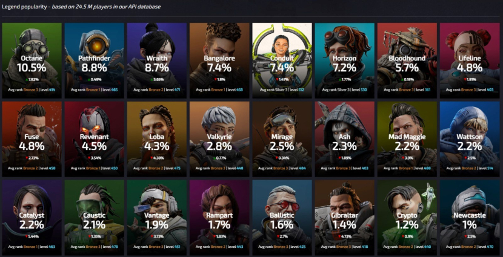
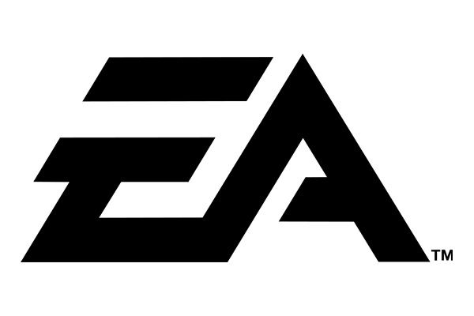
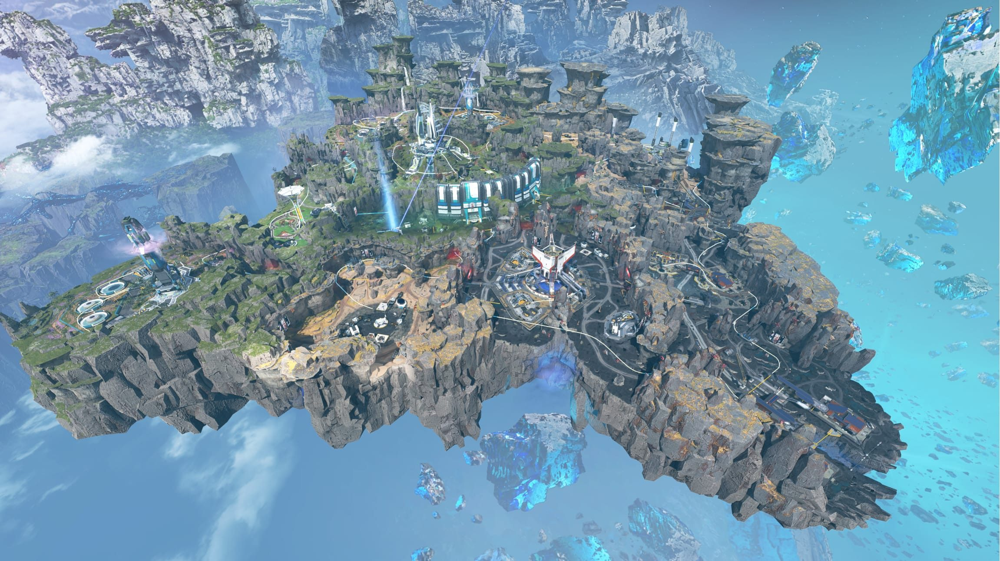
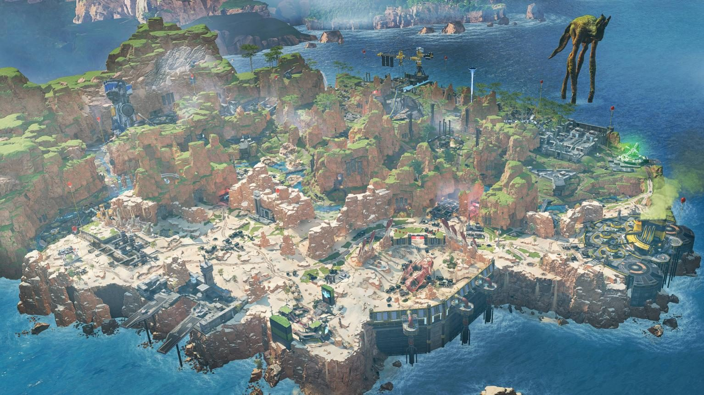
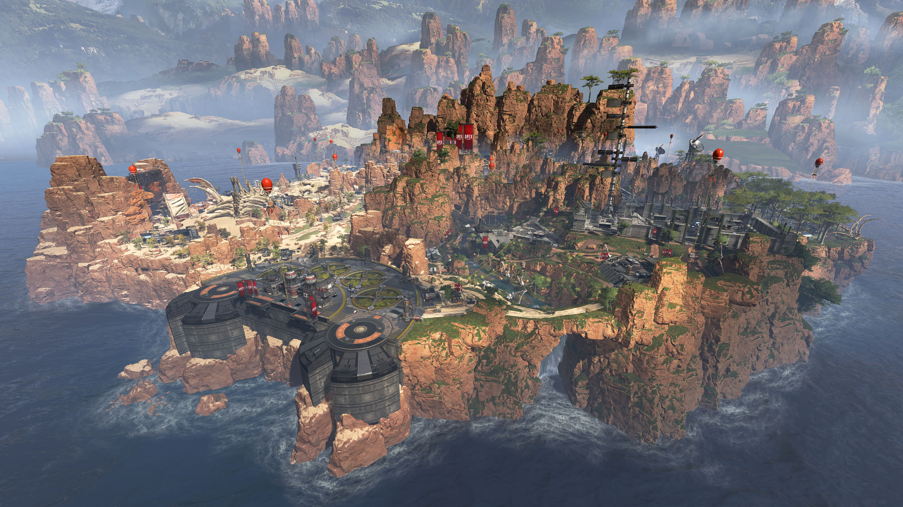

TENTANG APEX LEGENDS

Apex Legends adalah permainan battle royale free-to-play yang dikembangkan oleh Respawn Entertainment dan diterbitkan oleh Electronic Arts. Permainan ini berada di alam semesta yang sama dengan Titanfall. Permainan ini dirilis untuk Microsoft Windows, PlayStation 4, PlayStation 5 dan Xbox One pada 4 Februari 2019.
Tanggal rilis awal: 4 Februari 2019
Platform: PlayStation 5, PlayStation 4, Nintendo Switch, Windows, XBOX ONE, XBOX seri X dan seri S
Pengembang: Respawn Entertainment, Panic Button Games, Respawn
Penerbit: Electronic Arts
Perancang: Mackey McCandlish
Penghargaan: The Game Award untuk Game Multiplayer Terbaik
Genre: Tembak-menembak orang-pertama, Permainan battle royale
CHARACTER APEX LEGENDS
1.Octane
Pria lincah ini dulunya berasal dari keluarga kaya dan kaya sebelum beralih ke kehidupan aksi untuk mengurangi kebosanannya. Keputusan itu membuatnya kehilangan kakinya setelah dia menggunakan granat untuk menyelesaikan lari cepat, yang merupakan anggukan halus untuk speedrunner Titanfall 2 Cash Mayo – yang menggunakan taktik yang sama untuk menjalankan tantangan dalam 12 detik.
2.Pathfinder
Pathfinder maju dalam pemikirannya dan juga dalam perkataannya. Dia memulai lebih dari satu dekade yang lalu di laboratorium yang ditinggalkan dan terus mencari penciptanya sejak saat itu.Pathfinder adalah seorang petugas medis, tetapi perlengkapannya berbeda dari Lifeline karena perlengkapannya dimaksudkan untuk membantu Anda menjelajahi dan melintasi medan, bukan untuk menyembuhkan.
3.Wraith
Kita hanya tahu sedikit tentang Wraith yang misterius selain fakta bahwa dia terbangun di fasilitas penahanan bertahun-tahun yang lalu dengan suara-suara di kepalanya. Begitu dia mulai mendengarkannya, dia memperoleh kekuatan yang memungkinkannya melompat antar dimensi.Sama seperti Mirage, skirmisher interdimensional ini adalah karakter DPS Apex Legends, tapi dia lebih menyukai permainan sembunyi-sembunyi daripada menggunakan senjata api.
4.Bangalore
Jangan terkecoh, meski eksteriornya kokoh dan ketelitian militernya, Anita Williams memiliki alasan yang lebih mulia untuk mengikuti Apex Games. Terpisah dari keluarganya selama misi militer, dia mengumpulkan dana untuk berjuang kembali.Bangalore adalah salah satu dari dua arketipe kerusakan dan dibuat untuk unggul dalam mengalahkan kelompok musuh dalam jumlah besar.
5.Conduit
Sebagai dukungan sejati, Conduit berusaha untuk menghidupi keluarganya dengan bertarung di turnamen Apex setelah negara mereka mengecewakan mereka. Dia membantu timnya dalam permainan dengan memberikan perisai, peningkatan kecepatan terhadap sekutu yang membutuhkan, dan kemampuan pamungkas yang dapat mengubah keadaan dalam pertarungan apa pun.
6.Horizon
Horizon, atau dikenal sebagai Dr. Mary Somers, adalah ahli astrofisika dan gravitasi yang berasal dari Olympus. Kemampuannya termasuk memanipulasi gravitasi dan menggunakan robot kecilnya yang menggemaskan, NEWT, untuk bekerja.Horizon telah kembali ke Olympus setelah menghabiskan 87 tahun terdampar di dekat lubang hitam dan sangat ingin menemukan putra yang ditinggalkannya beberapa tahun lalu. Anda dapat menemukan semua kemampuan Horizon di bawah.
7.Bloodhound
Identitas Bloodhound tidak diketahui. Rumor berkisar dari pemburu berpakaian gagak yang sangat kaya hingga menjalani kehidupan sebagai budak di kehidupan sebelumnya.Terlepas dari itu, Bloodhound dikenal sebagai pelacak teknologi, yang berasal dari gaya bermain pemburu mereka. Jika Anda menyukai sensasi berburu dan ingin pergi ke Outlands untuk melenyapkan mangsanya, maka Bloodhound mungkin cocok untuk Anda.
8.Lifeline
Ajay Che adalah seorang tabib dengan hati nurani yang berat. Dulunya merupakan bagian dari keluarga kaya yang mencari keuntungan dari perang, Che pergi begitu dia benar-benar menyadari betapa buruknya bisnis saudaranya yang menjijikkan.Pemuatannya mencerminkan keinginan untuk menyembuhkan dan memperbaiki kerusakan yang dilakukan keluarganya: semua kemenangan Che dari Apex Games disumbangkan untuk tujuan baik.
9.Fuse
Fuse adalah juara sangkar tulang Salvo, sebuah planet yang terkenal dengan keahliannya dalam bidang balistik dan bahan peledak. Setelah menghabiskan sebagian besar hidupnya di Salvo sebagai tentara bayaran, Walter 'Fuse' Fitzroy memutuskan untuk meninggalkan planetnya untuk berkompetisi di Apex Games.Sebagai satu-satunya karakter dalam game yang dapat menyusun tata cara, Fuse terutama akan digunakan sebagai penyalur kerusakan.
10.Revenant
Pembunuh merah kita mungkin sintetis tapi dia jelas tidak simpatik. Revenant memperkenalkan dirinya kepada pengikut setia Apex dengan mengalahkan calon pesaing Forge. Ceritanya, Revenant dulunya manusia sebelum Hammond Robotics mengubahnya menjadi mesin. Dia tidak terlalu senang dengan hal itu.Kemampuan Revenant menerima pengerjaan ulang di Musim 18 untuk menjadikannya pilihan yang lebih layak baik dalam permainan kasual maupun kompetitif.
11.Loba
Loba adalah karakter Apex Legends baru untuk Musim 5, seorang pencuri ulung dengan kemampuan teleportasi dan mencuri barang rampasan.
12.Valkyrie
Kairi 'Valkyrie' Imahara adalah putri Viper, salah satu pilot Apex Predator Kuben Blisk di Titanfall 2. Valkyrie ingin membunuh Blisk karena membahayakan ayahnya yang akhirnya berakhir dengan kematiannya. Setelah pertemuan singkat dengan pria itu sendiri, dia diyakinkan untuk bergabung dengan Apex Games. Dengan bantuan Rampart, Valkyrie menggunakan sisa-sisa Northstar Titan milik Viper untuk membuat jetpack yang menghormati warisan ayahnya.Valkyrie bukan hanya satu-satunya karakter yang dapat terbang mengelilingi peta, ia juga menjadi karakter pertama yang memiliki dua kemampuan pasif. Sebagai karakter Recon, dia dapat meretas suar survei untuk mengungkap lokasi dering berikutnya. Perlengkapan unik Valkyrie membuatnya menjadi karakter yang sulit untuk dipiloti; untungnya, kami memiliki panduan karakter untuk membuat segalanya lebih mudah.
13.Mirage
Anggota lain dari pahlawan Apex Legends yang beragam, Elliot Witt membedakan dirinya dengan menekankan taktik sembunyi-sembunyi daripada kekuatan fisik yang luar biasa.
14.Ash
Sebelum dia menjadi simulacrum yang dikenal sebagai Ash, Dr. Ashleigh Reid adalah murid magang Horizon yang mengerjakan Proyek Iris. Pasangan ini bekerja sama untuk membuktikan keberadaan material yang disebut Branthium – material khusus yang hanya dapat ditemukan di lubang hitam. Dalam misi mengamankan Branthium, Ashleigh mengkhianati Horizon dan membiarkannya mati di dalam lubang hitam.Dalam upaya untuk menjaga sumber daya berharga untuk dirinya sendiri, Ashleigh mengkhianati seluruh kelompoknya sebelum terluka parah oleh Amelie Paquette, salah satu pencipta Pathfinder. Saat Ashleigh hampir mati, dia meminta untuk menjadi simulacrum. Kemampuan agresif Ash menjadikannya salah satu karakter paling mematikan dalam game, mampu memburu musuh dengan sangat mudah.
15.Mad Maggie
Tumbuh bersama sesama Apex Legend Fuse, Mad Maggie mendapati dirinya berada di bawah kekuasaan Sindikat dan terpaksa bertarung di Apex Games. Dia adalah penjelmaan kekacauan, dengan kehancuran dan ledakan yang mengikutinya kemanapun dia pergi.
16.Wattson
nsinyur yang ceria, Natalie 'Wattson' Paquette tidak asing dengan Apex Games, setelah membantu membangun Modified Containment Ring bersama ayahnya, yang merupakan insinyur listrik utama Olimpiade tersebut.Wattson adalah karakter defensif yang bermain mirip dengan Caustic, di mana fokusnya adalah pada pertahanan perimeter.Perangkapnya yang menggetarkan tidak hanya bagus untuk melindungi tim Anda, tetapi juga dapat memperlambat dan melemahkan musuh, memungkinkan Anda untuk menyerang.
17.Catalyst
Tressa mengaku dirinya tidak cocok dan menemukan hiburan dalam ilmu sihir, ritual, dan pembacaan bulan. Dia adalah Legenda defensif yang unggul dalam menahan dan menyangkal kemajuan musuh menggunakan ferrofluid yang dipatenkannya.
18.Caustic
Suatu ketika seorang ilmuwan bernama Alexander Nox, yang bekerja untuk produsen gas pestisida terkemuka di Frontier, akan mengalami perubahan yang tidak dapat ditarik kembali setelah memutuskan untuk menguji formula yang lebih kuat pada dirinya sendiri. Masing-masing milik mereka sendiri. Namun, karena alasan yang disayangkan, Caustic adalah tank dari karakter Apex Legends, dan perlengkapannya berkisar pada serangan racun dan gas.
19.Vantage
Mara bergabung dengan permainan Apex untuk meningkatkan kesadaran akan pemenjaraan palsu ibunya, berharap bahwa paparan yang dia terima karena mendominasi lawan-lawannya akan cukup untuk memberikan ibunya kebebasan dari penjara. Menggunakan bakatnya untuk bertahan hidup dan keakuratannya, dia memperkirakan bahwa memenangkan pertandingan akan menjadi kepastian.
20.Rampart
Rampart adalah modder ahli, siap melawan siapa pun yang menghalangi jalannya. Dengan minigun terpercayanya, Sheila, di sisinya dan kemampuan untuk membuat perlindungan, dia adalah Legenda terbaik yang mampu bertahan. Kedatangannya menandai era sistem kerajinan di Musim 6: Boosted, yang sangat cocok dengan kemampuan Apex Rampart
21.Ballistic
August Montgomery Brinkman adalah superstar Apex Games sebelum dikenal sebagai Apex Games. Seorang miliarder yatim piatu, ia memutuskan untuk menggunakan awal keuangannya dalam hidup untuk mendominasi medan perang. Setelah serangkaian kejadian yang tidak menguntungkan, August pensiun dari permainan tersebut, dan mengasingkan diri.Kini, untuk menyelamatkan putranya, Nathaniel, dari nasib yang sama yang menimpanya, August telah menawarkan jasanya ke Apex Games menggantikan Nathaniel. Sudah waktunya bagi Balistik untuk kembali melakukan yang terbaik; membunuh dan menan
22.Gibraltar
Gibraltar suka melindungi orang sama seperti dia suka menimbulkan rasa sakit. Dia dikenal sebagai raksasa yang liar namun lembut karena alasan yang baik: ayahnya kehilangan lengannya saat menyelamatkan dia dan pacarnya dari tanah longsor setelah pasangan tersebut mencuri sepedanya dan pergi berkendara.Karakter Apex Legends ini merupakan seorang tank yang rasa tanggung jawab dan perlindungannya untuk menebus kesalahannya sudah tidak diragukan lagi.
23.Crypto
Crypto yang menjadi buronan peretas bergabung dengan Bloodhound untuk menjadi legenda pelacak Apex Legend lainnya. Dia menggunakan drone udaranya untuk menjelajahi medan dan mengawasi musuh di Apex Arena.
24.Newcastle
Kakak laki-laki Bangalore, Jackson Williams telah mengambil peran sebagai Newcastle untuk memasuki pertandingan Apex dan menang untuk melunasi hutang kotanya dan membatalkan ancaman kejahatan terorganisir yang menghantui kehidupan rumah tangganya. Sebuah benteng berjalan, dia memberikan perlindungan bagi rekan satu timnya dan perisai bagi mereka yang mungkin terjatuh.
ELECTRONIC ARTS
Electronic Arts merupakan sebuah perusahaan multinasional yang menghasilkan beragam macam produk multimedia. Didirikan oleh William M. 'Trip' Hawkins III pada tahun 1982. Perusahaan ini mempekerjakan 8.000 karyawannya pada tahun 2008. Bermarkas di Redwood City, California.
MAPS APEX LEGENDS
  TENTANG
PEMBUAT WEB: Dindin Rudiana
NO WHATSAPP: 0881022099611
INSTAGRAM: dynrdn._
TIKTOK: dynrdn
____________________________